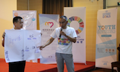

Youth4SDG Annual Meeting 2016 held in Shenzhen
2016.11.23 20:50
Youth4SDG Annual Meeting 2016 as well as World Youth Forum 2016 Shenzhen Summit was held in Shenzhen City from December 15th to 18th, 2016. The Forum was co-initiated by United Nations SDG Action Campaign Office, Chengmei Charity Foundation and nearly one hundred organizations from home and abroad, which aims to establish an open inter-generational cooperative platform that is based in China, with a global perspective and focuses on youth.
Themed “Youth, Core Power to Achieve Sustainable Development Goals”, Youth4SDG 2016 Annual Meeting and World Youth Forum 2016 Shenzhen Summit was co-hosted by Shenzhen Youth Federation of Social Organization and Shenzhen Commonwealth Foundation.
Picture 1: Secretary General of Youthink Center Wang Zekai introduced the ThinkBIG Initiative
Highlight 1: To Think BIG, to create a carnival that belongs to youth
Youth4SDG 2016 Annual Meeting and World Youth Forum 2016 Shenzhen Summit truly created a carnival that belongs to youth and it was not only organized by youth, but also youth-centered. Before the Summit, the ThinkBIG Academy in Shenzhen was held and the young social entrepreneurs of the ThinkBIG initiative were invited to share how they use creative models to address social problems and facilitate the achieving of the UN SDGs. The Meeting lasted for four days where 50 guest speakers delivered their speeches. 400 young people from all over the country participated and 30 events of various thems and types were organized during the Meeting. More than 10,000 people watched live Meeting and interacted with participants onsite via Weibo and other social media.
Picture 2: United Nations SDG Action Office Director Mitchell Toomey gives a video speech
Picture 3: Co-Chair UN Inter Agency Network on Youth Development, Senior Advisor Strategic Partnership and Advocacy to the Assistant Secretary-General/Deputy Executive Director of UN Women Ravi Karkara gives a video speech
Highlight 2: Local Meeting, Global Perspective – the Sustainable Development Goals
Youth4SDG Annual Meeting 2016 focused on five pillars of UN SDGs—People, Planet, Prosperity, Peace and Partnership. Present and tomorrow leaders were invited to dialogue in depth on sustainable development, innovation & entrepreneurship, global citizens, climate change and other issues on the stage of the ThinkBIG Weekend, in various forms including panel discussion, inter-generational dialogue, training camp, experience workshops and other kinds.
For the first time at the Forum there was a Virtual Reality exhibit which were co-presented by the UN SDG Action Campaign and Caixin Video. Via the VR videos participants are able to be aware of and feel the life of those children left at home by their out-going migrant-worker parents in the mountain area of Guizhou Province and victims suffering from the war in Syria, etc.
Picture 4: Panel discussion: How to support Chinese youth to be engaged with SDG
Picture 5: Group photo of delegates
Highlight 3: several initiatives of youth develoment lauched to nurture more young change-makers
Actions speak louder than words. The Meeting not only provided a great platform for everyone to communicate with each other and shared views freely, but also paid much attention to how to support the youth development better as well as encourage more youth to put forward their creative solutions in terms of social development issues and urge Chinese youth to take part in the global development affairs. Before the Meeting, the Youth4SDG Leadership Camp was held successfully and 50 young people from all over the country have learnt the methodology of social innovation and UN SDGs.
During the Annual Meeting, Youth4SDG and YouThink Center, with many partners, lauched ThinkBig Initiative 2017, Chinese Youth Delegation to United Nations General Assembly 2017. Chinese Youth Delegation to United Nations Climate Change Conference 2017, Youth4SDG Hub and Youth4SDG Advocate Program, Asian and Pacific Youth Exchange. The Chinese Version of The 12 Questions Every Climate Activist Hears and What to Say were published by Youth4SDG and The Climate Reality Project where Stephen Mills, the Strategic Partnership Director, gave a video introduction at the Meeting. All of these new projects, programs and initiatives promoted youth engagement in different topics but same way, to drive youth’s creative actions.
One Delegate from Sun Yat-sen University named Lin Peiyu said excitedly, “I was very glad that this meeting be held in
-

Announcing First UN Young Leaders for the Sustainable Development Goals
-

On International Day, UN says youth can lead global drive for a more sustainable future
-

The First Training Camp Deeply Learning UN Sustainable Development Goals in the World was Held in Beijing Successfully
-

Youth4SDG Annual Meeting 2016 held in Shenzhen